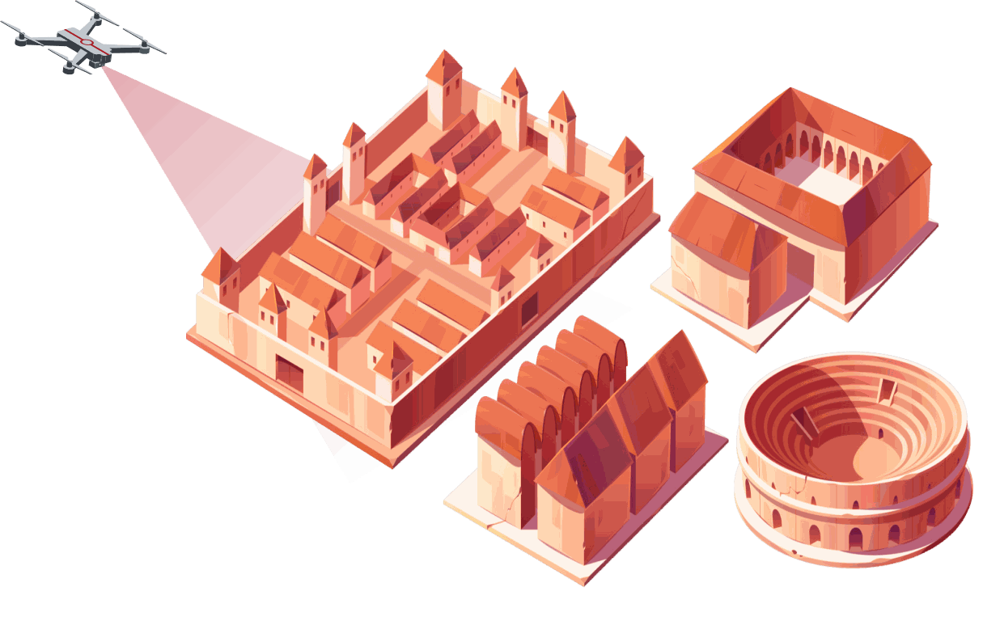
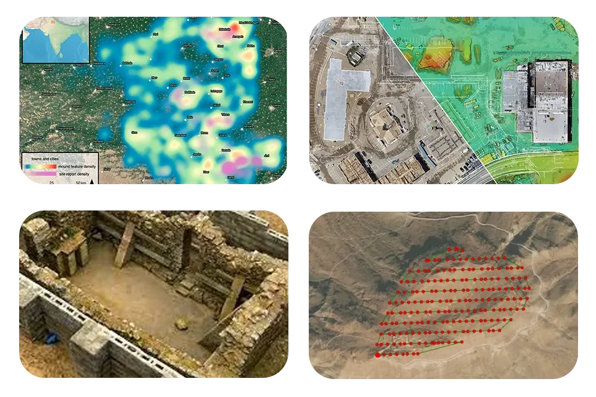
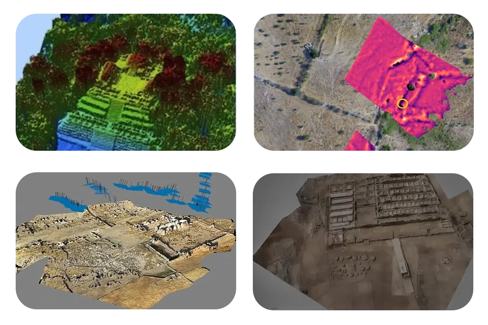
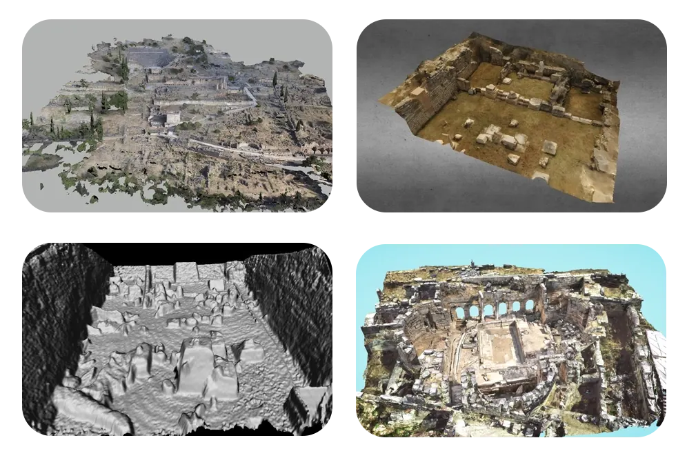
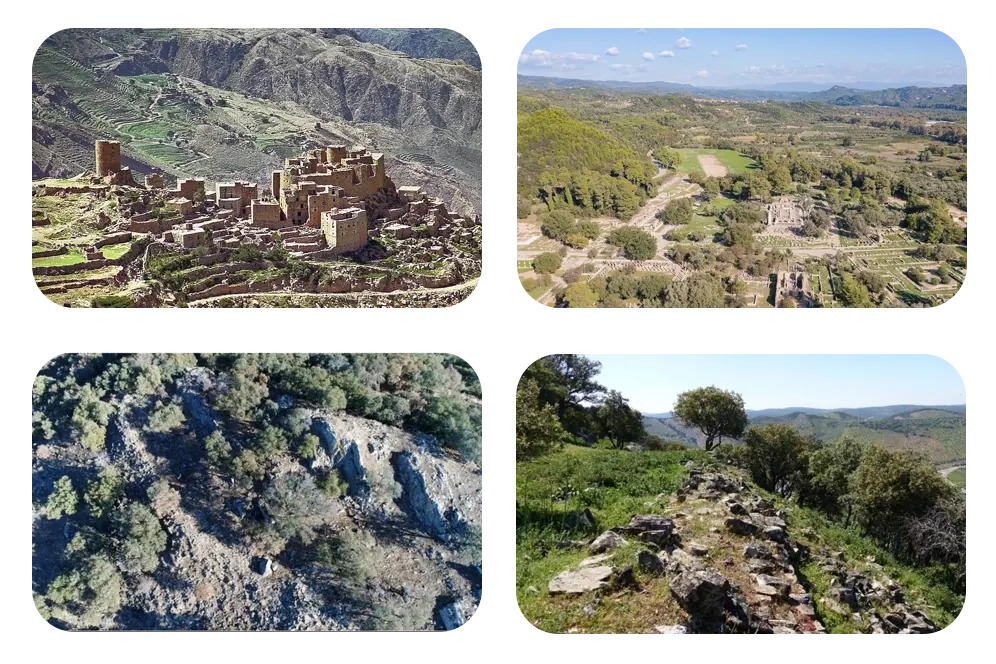
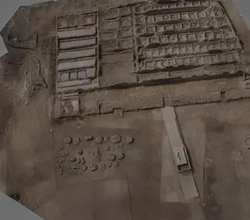
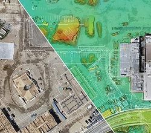
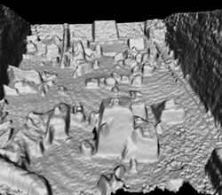
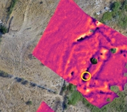
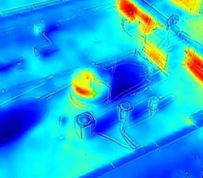

Drone Survey for Archaeology


Using drones with high-resolution cameras, we carry out detailed aerial surveys of archaeological sites. Our mapping provides complete visual documentation and precise topographic data for analysis and interpretation.
- High-resolution drone cameras capture fine detail of archaeological sites from above.
- Complete visual coverage means no part of the site is missed during the survey.
- Precise topographic data supports accurate analysis of the site's terrain and features.
- Detailed aerial surveys support interpretation and a clearer understanding of the site's history.
- Surveys tied to DGPS ground control points give accurate data, collected efficiently.
We offer LiDAR and thermal imaging to find hidden archaeological features. LiDAR produces accurate 3D terrain maps that reveal buried structures and landscapes hidden by vegetation or soil. Thermal imaging detects temperature differences that can point to features below the surface.
- LiDAR and thermal imaging reveal features that are not visible in ordinary photographs.
- LiDAR creates precise 3D maps of terrain, uncovering buried structures and landscapes obscured by natural elements like vegetation or soil cover.
- Thermal imaging detects temperature variations, helping to identify subsurface anomalies that may indicate archaeological sites or features.
- Using LiDAR and thermal imaging together improves the chances of finding significant features.
- Together, these methods give archaeologists a better basis for interpreting past civilisations.


Before excavation, we help archaeologists plan using aerial imagery and 3D models. During excavation, our drones provide live aerial footage to guide ground crews and support accurate documentation.
- Before digging starts, we analyse aerial imagery and 3D models to identify likely excavation targets and areas of interest.
- Our team gives recommendations based on the aerial data to help plan the excavation.
- During excavation, live aerial footage guides ground crews and supports on-site decisions.
- Live footage improves coordination on site and helps keep work in line with archaeological protocols.
- Drone monitoring during excavation records important details for analysis after the dig.
Our drones can reach remote or inaccessible archaeological sites in dense forest, rugged mountains or harsh desert. We survey these sites safely and efficiently while keeping environmental impact low.
- We use DJI and custom-built drones suited to forests, mountains and deserts, so remote or inaccessible sites can still be surveyed.
- Our drones operate safely in difficult terrain, reducing risk to both equipment and personnel.
- Surveying from the air avoids ground access that could damage sensitive archaeological landscapes.
- We plan each survey to capture complete aerial imagery and data efficiently.
- Drones let archaeologists document remote sites in detail, widening the scope of research.

Deliverables

Aerial Imagery
We deliver high-resolution aerial photographs covering the whole site from different angles. The images record the site's features, structures and surrounding landscape, helping archaeologists understand its layout and context.

Orthomosaic Maps
We create orthomosaic maps by stitching together hundreds or thousands of aerial images and removing distortion, so the site's terrain and features are shown accurately. These geometrically corrected maps are used for measurement, planning, analysis and site management.

Topographical Data
We generate Digital Elevation Models (DEMs) and Digital Terrain Models (DTMs) from aerial survey data. A DEM represents ground surface elevation, and a DTM shows the bare terrain with buildings and vegetation removed. These datasets support terrain analysis, slope calculation and hydrological modelling for site research and management.

3D Models
We build detailed 3D models of archaeological sites from aerial survey data. The models show elevation changes, structures and landscape features, letting researchers explore and analyse a site virtually.

LiDAR Data
We produce accurate 3D terrain maps showing surface features and anomalies, including buried structures and features hidden beneath vegetation or soil cover. They give archaeologists a clear picture of the site's topography.

Thermal Imaging Data
We analyse temperature variations across a site to pinpoint subsurface anomalies that may be archaeological features. These anomalies mark targets for further investigation, such as buried structures or artefacts.

Aerial Photography and Videography
We provide aerial photographs and videos that record site conditions, erosion and any looting or encroachment. During excavation we also supply live or recorded aerial footage for documentation and on-site coordination.

Regular Surveillance Reports
We provide regular reports from surveillance flights over archaeological sites, recording any changes in site condition, new risks or significant developments so they can be acted on early.
Our Features
Precision Mapping and Surveying
Our drone surveys, tied to DGPS ground control points, map sites accurately, locate buried structures and record ancient landscapes.
Efficient Data Collection
Drones cover large areas quickly, producing complete datasets with less fieldwork.

Non-invasive Exploration
Our drones collect data without disturbing delicate sites, protecting cultural heritage for future study.
In-house GIS Analysis
Our in-house GIS team analyses drone data to help researchers find historical patterns and understand site histories.